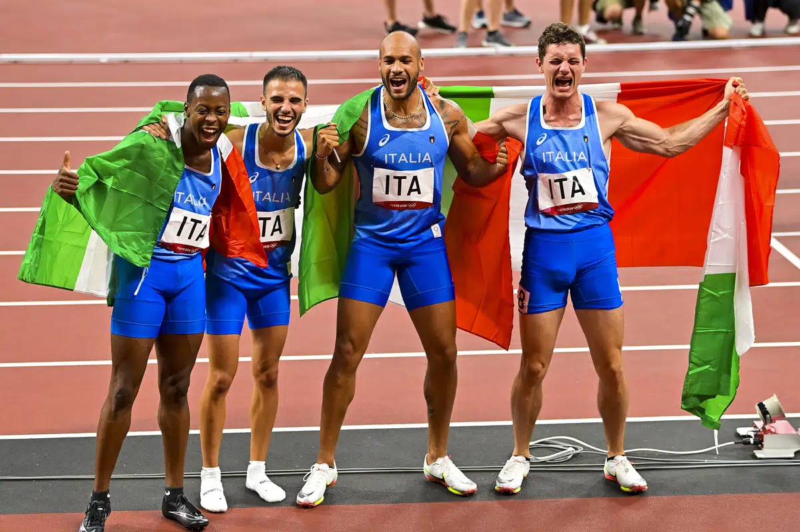
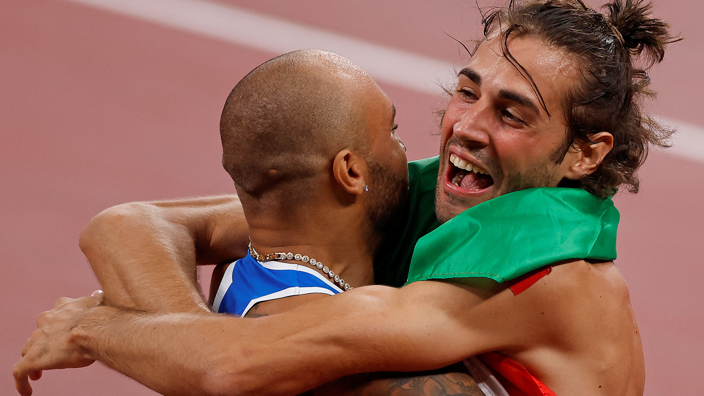

Perché ho scelto questo argomento:
Fare atletica può diventare una passione profonda per molti ragazzi, lo sport offre una struttura fisica e mentale che aiuta a sviluppare una forte disciplina e determinazione. L'atletica offre anche un senso di realizzazione e di autostima. Raggiungere obiettivi personali, migliorare le proprie prestazioni e competere contro gli altri sono esperienze che possono contribuire a rafforzare la fiducia in se stessi e l'immagine di sé di un ragazzo. Inoltre, il mondo dello sport è un'opportunità per creare legami significativi con gli altri. La collaborazione con i compagni di squadra, la condivisione delle vittorie e delle sconfitte e la costruzione di relazioni con allenatori e compagni possono portare a preziose amicizie e una rete di supporto sociale. Infine, l'atletica offre la possibilità di sfidare i propri limiti e superarli. Questa sensazione di crescita personale e miglioramento costante è una fonte di gratificazione e motivazione per molti ragazzi. |

 |